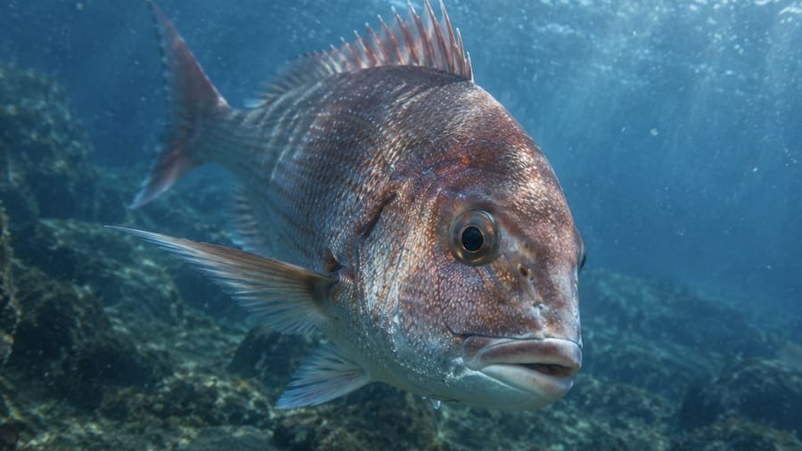
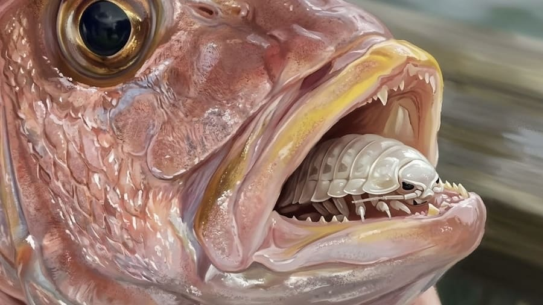

陸っぱりで狙うマダイ釣り完全ガイド。防波堤から「魚の王様」を仕留める

祝い事の定番であり、その美しい姿と強烈な引き、そして抜群の食味から「魚の王様」として古くから親しまれてきたマダイ。マダイ釣りといえば船に乗って沖へ出るイメージが強いかもしれませんが、実は潮通しなどの条件さえ揃えば、私たちの身近な防波堤や地磯などの「陸（オカッパリ）」からでも十分に狙うことができるターゲットです。今回は、陸から大型マダイを仕留めるためのアプローチやポイント選び、そしてマダイにまつわる驚きの小話までを徹底解説します。
1. マダイってどんな魚？ 似ている仲間との見分け方
マダイはスズキ目タイ科に属し、成長すると1m近くにもなる大型魚です。鮮やかな赤い魚体にコバルトブルーの美しい斑点が散りばめられ、尾ビレの後端が黒く縁取られているのが外見の大きな特徴です。幼魚のうちは「チャリコ」と呼ばれて浅場でもよく釣れます。ちなみに、このド派手な赤い体色は、赤い光が吸収されやすい海中（特に深場）においては保護色として働き、意外にも目立たないようになっています。
近縁種に「チダイ」や「キダイ」がいますが、チダイはエラ蓋の縁が血のように赤く、尾ビレの黒い縁取りがありません。キダイは全体的に黄色みがかっています。
また、釣ったマダイが「天然」か「放流（人工ふ化）魚」かを見分ける面白いポイントとして、「鼻の穴（鼻孔）」があります。天然のマダイは鼻孔が片側に2つずつ（左右で計4つ）独立して開いていますが、放流魚は片側の穴が1つに繋がっている個体が高い確率で出現するため、ここを見れば出自を推測することができます。
2. 陸から狙える「時期」と「一級ポイント」
成長するにつれて沖側の深場を回遊するようになるマダイを陸から狙うには、「マダイが岸に寄ってくる条件」をいかに見極めるかが重要です。
時期（シーズン）：年間最大のチャンスは、産卵を控えた大型個体が体力をつけるために浅場へとやってくる春の「乗っ込み」シーズンです。また、水温が下がり始め、越冬に向けてエサを荒食いする秋も非常に有望なシーズンとなります。
ポイントと時間帯：外洋に面した潮通しの良い堤防や、足元から水深のある沖波止、砂地に岩礁が点在する場所、かけ上がり（海底の斜面）などが一級ポイントです。大型になるほど警戒心が強くなるため、日中よりも薄暗い朝夕のマズメ時や、夜釣りに分があります。
3. 防波堤からの2大メソッド（カゴ釣り＆投げ釣り）
陸からマダイを狙う場合、大きく分けて2つの効果的なアプローチがあります。
遠投カゴ釣り（沖のタナを直撃）
沖目のポイントへ、コマセ（撒き餌）と付けエサをまとめて届ける本格的な釣法です。マダイは常に海底にベッタリ張り付いているわけではなく、状況によって底から数メートル上の中層を泳いでいることもあります。そのため、水深を測ったうえで、マダイが回遊している「タナ（狙う水深）」をこまめに調整し、正確に探し当てることが釣果の最大の鍵となります。
投げ釣り・ぶっ込み釣り（夜の待ち伏せ）
夜釣りを中心に、海底にエサを置いて回遊を待つスタイルです。砂礫底にある根周りなどを狙い、夜間であれば水深は5m程度でも十分にチャンスがあります。エサはユムシやイワイソメといったアピールの強い大型の虫エサが有効です。ちなみに、関西圏でよく使われるマムシ（イワムシ）は、お隣の韓国ではなんと煮物などで食用にされているという驚きの事実もあります。
この釣りでは、エサを食い込んだマダイが一気に走るため、竿を持っていかれないようにリールのドラグを「軽く引くと糸が出る程度（ゆるめ）」に設定しておくことが鉄則です。ミチ糸が勢いよく引き出されるアタリが出たら、ドラグを締めて力強くアワセを入れましょう。
4. ゲーム性抜群！ルアーで挑む「ショアラバ＆メタルジグ」
マダイはエビやカニだけでなく小魚も捕食するため、ルアーフィッシングの好ターゲットでもあります。
ショアラバで広範囲を探る
岸からタイラバ系のルアーを投げる「ショアラバ」の基本アクションは、ルアーを遠投して着底させ、巻き上げては再び着底させる動作の繰り返しです。マダイが底付近にいる場合は底から数mを重点的に探りますが、潮流や地形によっては中層まで浮いていることもあります。そのため、「着底直後」「底から1～3m」「底から5m」「中層」など、巻き上げるタナ（レンジ）を細かく変えながら反応を探るのが釣果を伸ばすコツです。
メタルジグで小魚パターンを攻略
海に小魚（ベイト）が多くて追われている時や、潮がよく効いていて沖に深場がある条件では、メタルジグも威力を発揮します。青物を狙う時のようにただ高速で巻き続けるのではなく、底から中層にかけてを丁寧に探るアプローチがマダイには向いています。
タックル選びの目安
ショアラバ、メタルジグともに、M～MHクラスのルアーロッドを使用するのが一般的です。リールは3000～5000番台のスピニングリールを合わせ、釣り場の地形や想定される魚のサイズに応じて選びましょう。
5. 強烈な「三段引き」を制するファイトの極意
マダイが掛かると、「ゴン、ゴン、ゴン」と竿を力強く叩くような、特有の重量感ある首振り（通称：三段引き）を見せます。大型になるほど想像を絶する突進力を見せるため、力任せにゴリ巻きするのはハリス切れや針伸び、竿の破損に直結する危険な行為です。
魚が走っている時は決して無理にリールを巻かず、竿を立ててしっかり曲げ、魚の引きを竿の弾力とドラグで吸収して耐えるのが基本です。走りが止まったら竿を起こして巻き取るポンピングを繰り返し、水面まで浮かせたら、最後の激しい抵抗に備えて必ずタモ網を使って確実に取り込みましょう。
6. 【番外編・小話】マダイの口に潜む「タイノエ」は食べられる！？
釣ったマダイの口を開けたとき、中に白くて大きなダンゴムシのような虫がへばりついていて、ギョッとした経験を持つ人もいるかもしれません。これは「タイノエ」と呼ばれる等脚目（フナムシやダンゴムシの仲間）の寄生虫です。見た目はかなりエイリアンチックで衝撃的ですが、人間に寄生したり毒を持っていたりすることはなく、全くの無害です。タイノエが潜んでいたマダイも、もちろん問題なく美味しく食べられます。

さらに驚くべきことに、このタイノエ自体も加熱すれば「食べられる」のです。甲殻類の仲間であるため、エビやシャコに似た旨味があり、素揚げや唐揚げ、炊き込みご飯などにすると実は非常に美味しいと、一部の好事家の間で密かな人気を集めています。
また、タイノエは雄と雌がペアでマダイの口の中に住み着くため、古くは「夫婦円満」の象徴として、「鯛の鯛」と同様に縁起物として扱われていた歴史もあります。もし見つけたら、捨ててしまう前に「縁起物」としてじっくり観察したり、勇気を出して味わってみるのも、マダイ釣りの一風変わった楽しみ方かもしれません。
「魚の王様」は、ポイントと釣り方を絞り込めば陸からでも十分に手が届くターゲットです。潮を読み、タナを探り、ドラグ設定に気を配って、あの強烈な引きをぜひ体感してみてください！
📍 関東の生息・釣果スポット
※マップ上の赤いドットが釣れるポイントです。